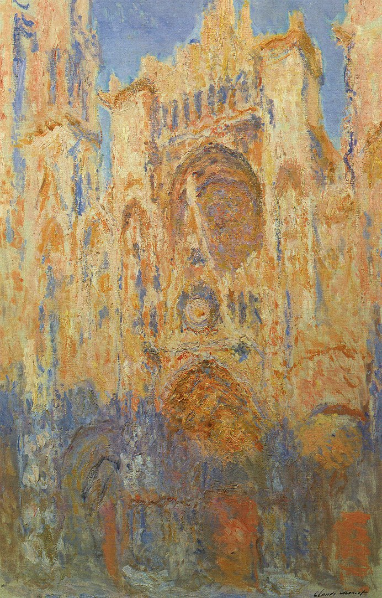
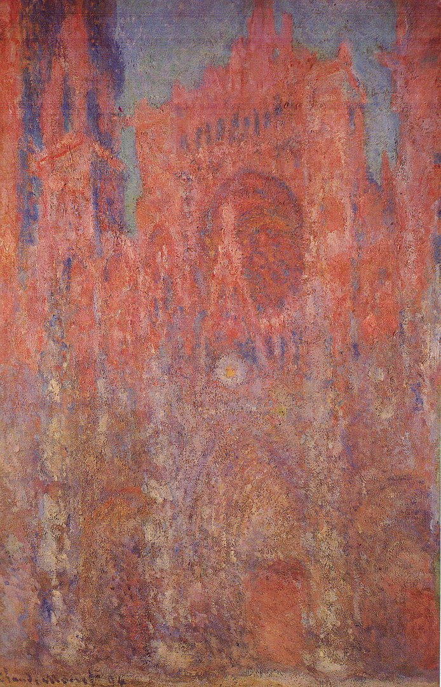
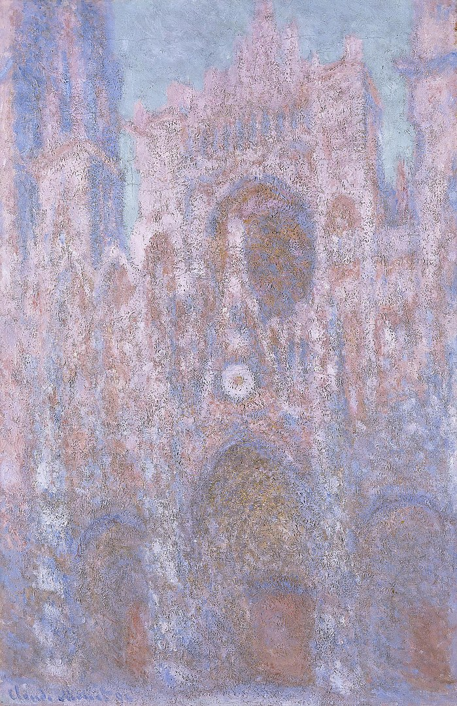
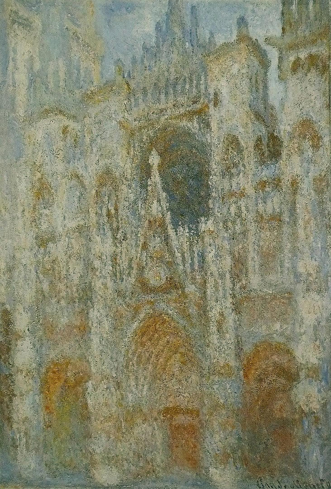
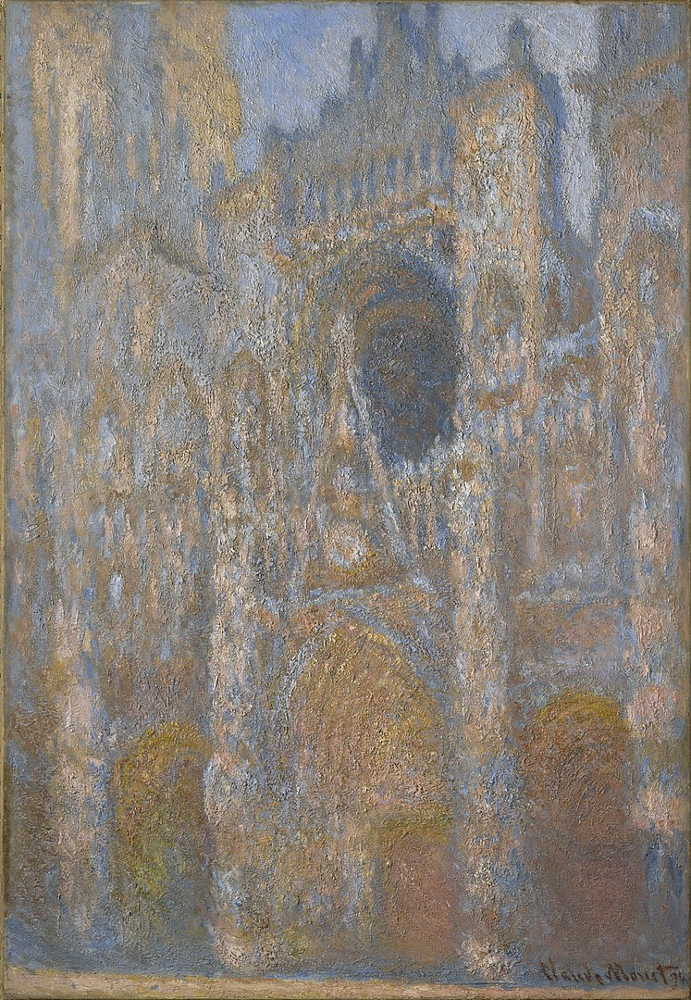

6
Rouen Cathedral
“
The light constantly changes, and that alters the atmosphere and beauty of things every minute.
———— Claude Monet
”
Hover to view the whole painting

Rouen Cathedral, Facade (sunset), harmonie in gold and blue
1892–1894
Musée Marmottan Monet
Paris, France

Rouen Cathedral, Facade 1
1892–1894
Pola Museum of Art
Hakone, Japan

Rouen Cathedral- Setting Sun, (Symphony in Grey and Pink)
1894
National Museum Cardiff
Cardiff, United Kingdom

La Cathédrale de Rouen. Le portail, soleil matinal; harmonie bleue
1892–1893
Musée d'Orsay
Paris, France

Rouen Cathedral, The Façade in Sunlight
1894
Clark Art Institute
Williamstown, United States

Rouen Cathedral, West Façade, Sunlight
1894
National Gallery of Art
Washignton DC, United States

Rouen Cathedral
1892
National Museum of Serbia
Belgrade, Serbia

Rouen Cathedral, West Façade
1894
National Gallery of Art
Washignton DC, United States

The Cathedral in Rouen. The portal, Grey Weather
1892
Musée d’Orsay, Paris
Paris, France

The Portal of Rouen Cathedral in Morning Light
1894
The J. Paul Getty Museum
Los Angeles, United States